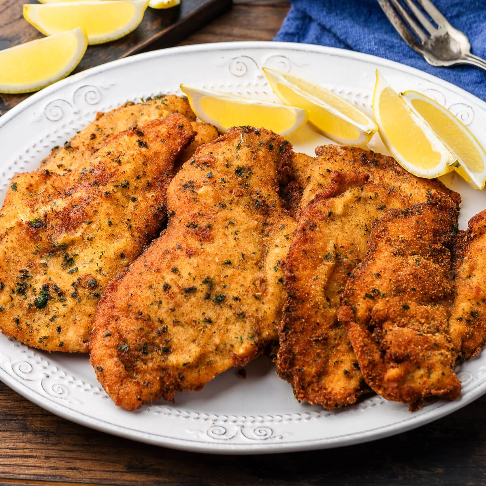
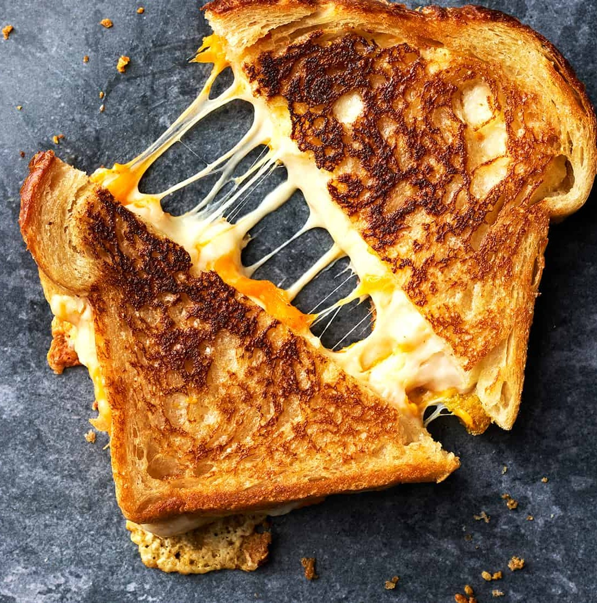
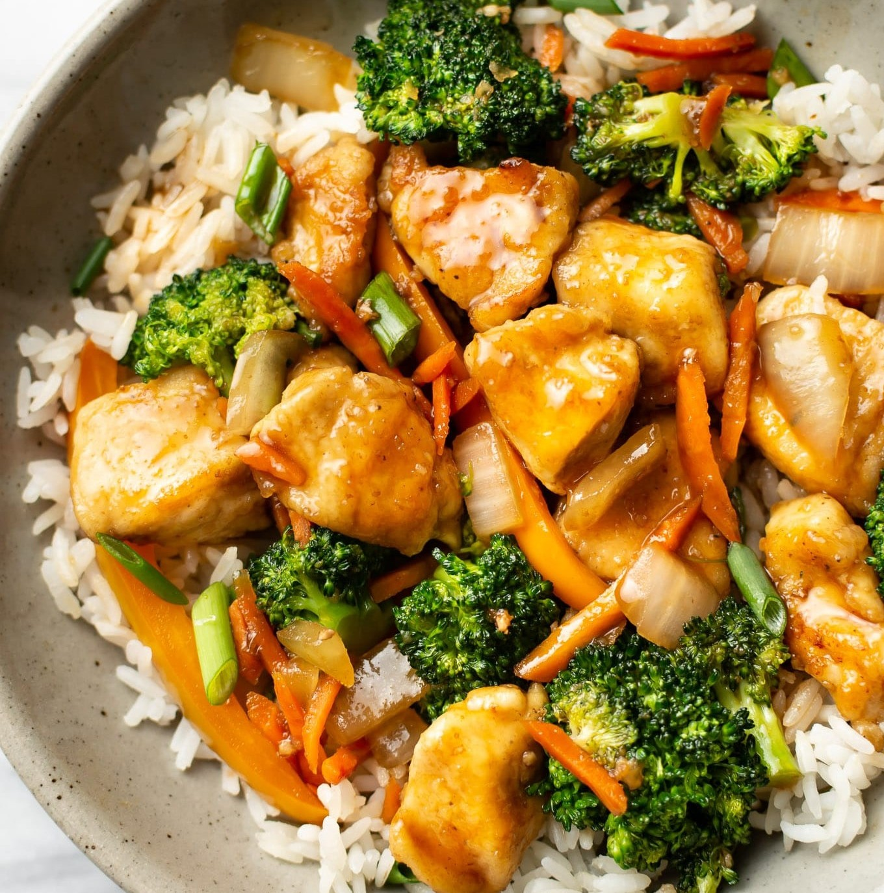
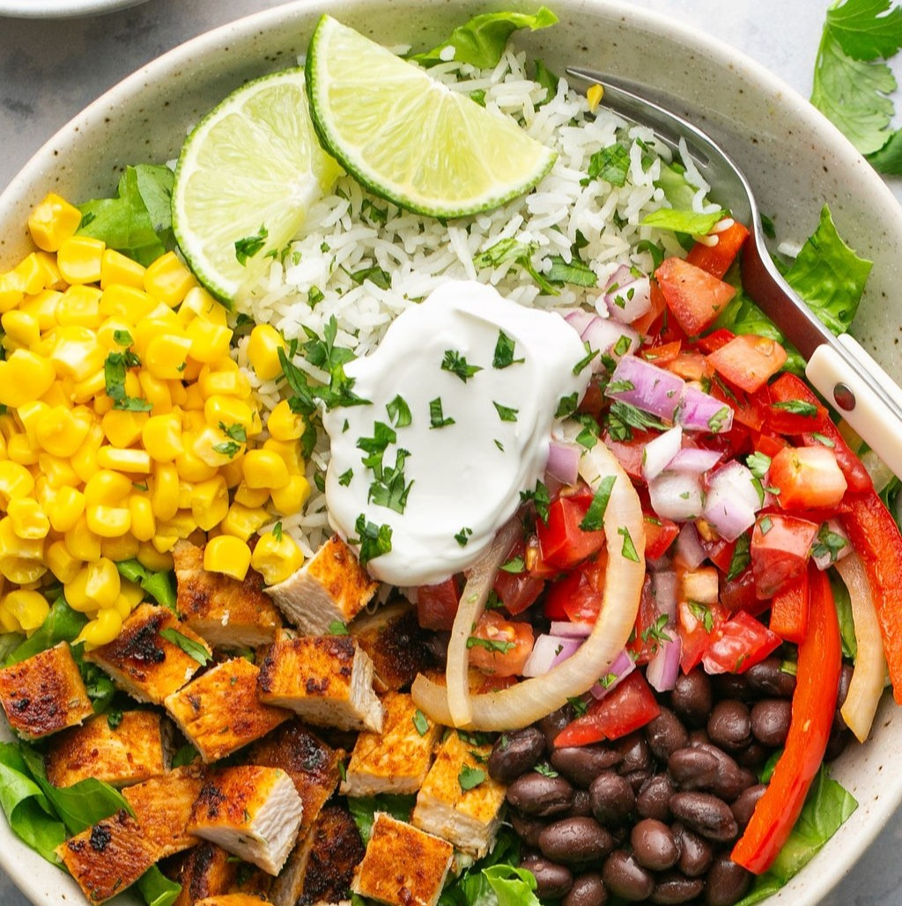

Lemon chicken

- Slice chicken breasts thin
- Dredge chicken lightly in flour mixed with a little salt and pepper
- Heat olive oil and little butter together
- Brown chicken on both sides then remove from pan
- Scrape pan to loosens the brown bits
- Add ~1tbsp of butter, melt it, and add lemon juice to taste
- Add 1/2 cup to 1 cup chicken broth and 1/2 tsp flour
- Stir to make sauce thicker and bring to a boil
- Turn down heat, add chicken back and add parsley
- Serve over orzo or egg noodles
Chicken Cutlets

- Slice chicken breasts thin
- Mix 1 egg, a little milk, pepper and some parmesan cheese
- Add chicken and let soak for 15 mins to 1 hour
- Brown chicken on both sides then remove from pan
- Coat chicken in Italian bread crumbs
- Fry chicken in a pan with olive oil 3-5 mins per side until brown
Grilled Cheese

- Heat butter in pan
- Assemble sandwich with choice of cheese
- Cook and flip until golden brown on each side
- Serve with potato chips if desired
Chicken Stir Fry

- Cut chicken into cubes
- Coat chicken with a little flour mixed with salt and pepper
- Cook chicken in olive oil on the stove
- Remove chicken from pan and add in fresh or frozen veggies of choice
- Cook veggies till tender
- Add stir fry sauce to center of the pan
- Stir to make sauce thicker and bring to a boil
- Add chicken back in and mix all together
- Serve with rice
Homemade Chipotle Bowls

- Cut chicken into cubes
- Coat chicken with salt, pepper, paprika,chile powder, garlic powder and chipotle seasoning
- Cook chicken in olive oil on the stove
- Cook rice and add in cilantro and lime juice to taste when finished
- Combine with a choice of guacamole, salsa, cheese etc.